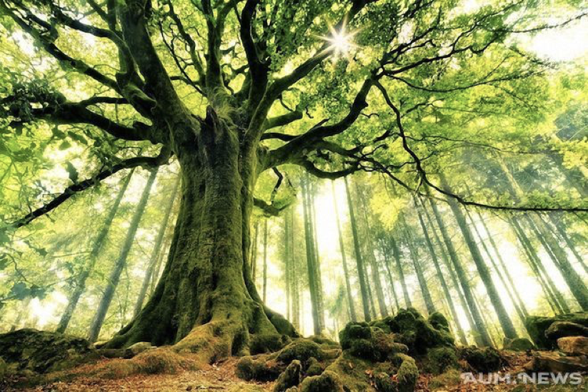

<div class="content">
<div class="scroller">
<h2>Функция лечения</h2>

<p>Функция лечения задается как биоценоз, который создает сферу
                  жизни вокруг моих органов: Сердце, печень, поджелудочная
                  железа, бронхи, а также вокруг всего моего тела, Сфера жизни
                  питает мою кровь энергией жизни, основные внутренние органы и
                  ткани жизненной энергией!</p>
<p style="font-size: 1rem; "> Настроится на биоценоз, создаем
                  сферу жизни и привязать полученное состояние к зеленой чакре
                  Скарабея; </p>
<p style="font-size: 1rem; "> Программируем сферу жизни на
                  увеличение энергии источника энергии(Солнца) в случае
                  уменьшения жизненной энергии ниже нормального уровня! </p>

<p style="font-size: 1rem;color:red"> Настроиться на биоценоз
                  или тотем хищников-&gt;Анахату-&gt; и связать полученное
                  состояние с зеленой чакрой Скарабея. </p>
<div class="green" style="color:white">Запрограммировать
                  управляющего иффрита на выполнение функции лечения привязав к
                  цвету кнопки панели управления(соответсвует цвету фона
                  настоящей надписи)</div>
<h1 style="text-align: center; color:red"> 17 аркан </h1>
<div style="text-align: left; color: #000080; margin-Left: 10px; font-size: 1rem; padding: 0,10px">
<p><span style="color:red">17</span> аркан связан с энергиями
                    жизни и целительством. Эта энергия производится живыми
                    организмами и на карте 17 аркана содержатся следующие
                    настройки:</p>
<p><span style="color:red">Н</span>ад головой девы
                    обозначающей правое полушарие находятся звезды и среди них
                    самая яркая звезда- Солнце.</p>
<p><span style="color:red">Д</span>альше нарисованы растения и
                    листья растений, которые усваивают солнечный свет и
                    преобразуют его в массу растительные клетки. </p>
<p><span style="color:red">Д</span>алее здесь мы видим цикл
                    жизни и смерти, при этом дева черпает из реки жизни воду и
                    это обозначает рождение и выливает эту воду на берег и это
                    обозначает смерть. Рождение и смерть здесь представляют
                    собой цикл.</p>
<p><span style="color:red">Ц</span>епочка энергии 17 аркана
                    выглядит следующим образом:</p>
<p><span style="color:red">Р</span>астения могут усваивать с
                    помощью хлорофилла прямой солнечный свет, превращая энергию
                    солнечного света в собственную массу, травоядные животные
                    кушают растения и превращают растительный белок в животный.
                  </p>
<p><span style="color:red">Х</span>ищники охотятся на
                    травоядных животных и при этом вынуждены думать, питаясь
                    травоядными хищники думают и создают каналы энергии
                    связанные с ментальным телом на частоте анахата чакры
                    человека.</p>
<p><span style="color:red">В</span> диапазоне анахата чакры
                    люди могут воспринимать эти каналы связанные с животными и
                    эти каналы питают энергией непосредственно ментальное тело.
                  </p>
<p style="font-size: 1.2rem; font-weight: bold; padding: 0 10px;">
                    РАТИ УРО ЕТ ЕТТОРИ ВЭТАНО ЕРР.ОТТОРИ. ОРУМ ГАРТ ЗА.ЕТТО.
                    ЕТТОРИ СЭТАНО ВЭЛТ.ЕТТОРИ СЭТАНО ИРТ.ВЭТТИ.ВЭТОРИ ОРТ ЕРРО.
                    ЕРРИ ИЛТ САНТО.ОРУМ.ОРУМ ВЭЛТ ГАТТО. </p>

</div>
</div>

